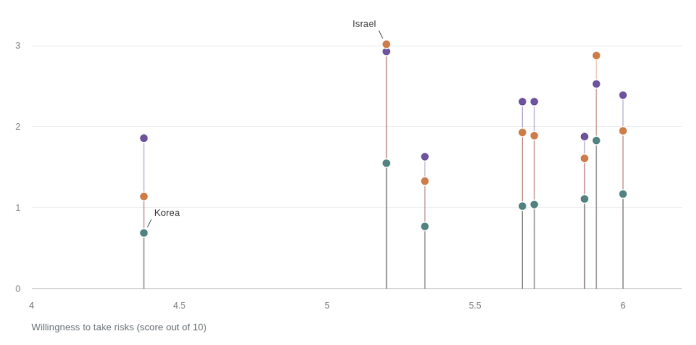
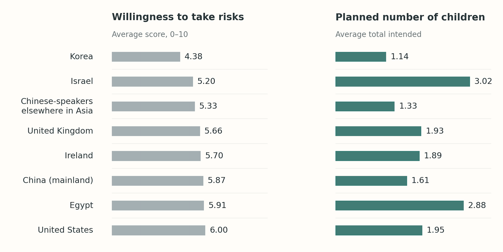
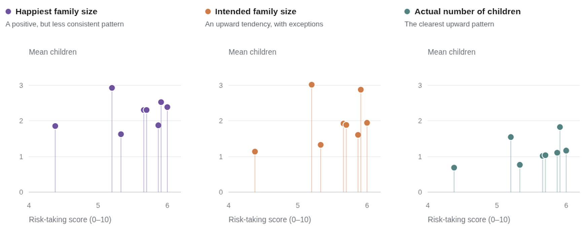

Design notes
1. A new chart that expresses your visual and editorial judgement. And feel free to include:
a. Any sketches as you developed your new chart
Here I was testing out different colors and the line connecting dots.

b. Any initial concepts you tried and discarded with a note on why
I first explored a few different ways to show the relationship. One idea was a slope chart, and another was a bar chart that ranked countries by their willingness to take risks. But at the end I felt that a scatterplot was still better for showing the relationship between risk-taking and family size.

(I used AI to generate this bar chart as a quick mockup because I just wanted to test out the idea and see if this chart type would work.)
I also tried separating the three family size measures into three scatterplots and tried a small multiples. Each chart would show only one measure, so the points would be less crowded. But eventually, I wanted readers to see how the three measures compared without having to look back and forth between different charts, so I discarded this idea too.

c. Any technical notes on
i. Approach to building from a graphical perspective
I kept the scatterplot but used animation to introduce the information step by step. I started with country rankings, moved the dots to their actual risk scores, and then added the three family size measures. The last step highlights the main trend.
ii. Software(s) or methods used
I used HTML, CSS, JavaScript, and SVG to build the interactive chart and animations.
iii. Color, line, shape, hierarchy, value, motion, etc.
I used only colors instead of both colors and shapes to separate the three family size measures. And I also added animation and annotation to make the changes easier to follow.
In the final step, I turned two measures gray to create a clearer visual hierarchy. I also used annotations for Egypt and Israel to explain the exceptions to the overall trend.
2. A critique of the existing chart and an explanation of your own design choices in revision. This should include:
a. A description of the original goal(s) of the chart, as you read it in context.
The goal was to show how three measures of family size relate to willingness to take risks across the groups in the survey: how many children respondents thought would make them happiest, how many they planned to have, and how many they already had.
Further down in the story, the author looks at other factors, like how clearly people could picture their future and whether they expected life to get better. Here, though, we’re only looking at risk-taking.
I also learned later in the article that optimism seemed to have a stronger link to family size across groups than risk-taking did. But willingness to take risks still had a positive relationship with family size, and that was what I wanted this chart to show. So I tried to show this trend but keep the headline from sounding too certain when remaking this chart.
b. Why it falls short of that (those) goal(s).
The original chart looks cluttered because it tries to show too many things at once.
The X and Y axes already show two different factors, but the chart also includes three measures of family size. On top of that, the chart uses both colors and shapes to separate the three family size measures, which makes it even harder to read. All eight country names are also placed vertically on an already crowded chart, which makes it difficult to focus on the data.
Countries like Egypt and Israel also seem to go against the overall trend, which makes the positive relationship even harder to see. Without the trend lines, I could barely see the positive relationship the chart was trying to show. But not everyone knows what these trend lines mean, so they may not be very helpful.
c. Whether you tried to design a chart that served all of those goals or narrowed your focus.
I kept the scatterplot because I think it is still the best way to show the relationship between two factors. I also wanted to keep all three measures of family size because they provide useful context and it is interesting to see the comparison between them. But my main goal was to make the chart less crowded and easier to follow.
Instead of showing everything at once, I decided to break the chart into several steps using animation. Each step shows only a little more information, so readers can understand the chart before it gets more complicated. In the final step, I narrowed the focus to the number of children people already had because it seemed to show the clearest positive relationship with willingness to take risks. So I would say both to answer this question as I tried to serve all the goals, but I also narrowed the focus in the final step.
d. How your design choices better serve the goal you identified.
First, I think it is important for readers to understand what is on the X and Y axes when they look at a scatterplot, so they know what two factors they are comparing. I made the X axis the first step of the animation. I also started by showing the eight countries in rank order, with equal space between them. This gives readers a chance to see all the country names clearly before the points move to their actual scores, where they become more crowded.
Next, I showed all three family size measures, with a different color for each one. This also fixed one problem in the original chart, which used both colors and shapes to show the same differences. I only used colors to make the chart look cleaner.
Finally, I still thought the chart was too crowded with all three measures shown together. Since the number of children people already had seemed to have the strongest relationship with risk-taking, I decided to highlight only that measure and turn the other two gray. This way, readers can still see the other measures for context, but their attention goes to the one I want to focus on.
I also added annotations for Egypt and Israel at the last step because they do not seem to follow the overall trend as closely as the other countries. By making the other points less distracting and explaining these two exceptions, I wanted to make the upward positive trend easier to see without suggesting that every country follows the same pattern.
e. What you would have asked the author to shape your choices if you had been working closely with him.
First, I would ask why Japan was not included in the chart, since it was mentioned in the story.
I would also ask if we really needed to show all three measures of family size in this chart. Could we focus on just one? I think showing only one measure could still serve the purpose of explaining the relationship between risk-taking and fertility, at least for this part of the story. It would also make the chart much easier to read. I would want to know if the author had a specific reason for including all three measures or if we could simplify the chart by focusing on just one.